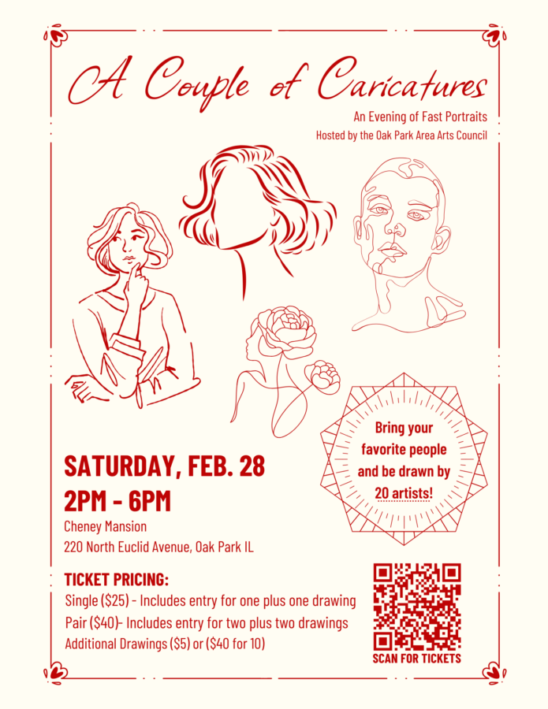

A Couple of Caricatures
Bring your family, friends, or favorite people and enjoy a fun-filled afternoon of art in partnership with the Oak Park Area Arts Council. Talented local artists will be stationed throughout the first floor of Cheney Mansion, ready to create a charming, one-of-a-kind caricature for you to take home and proudly display.
Meet the artists, watch the creative process unfold, and enjoy friendly conversation as your portrait comes to life. A caricature portrait is included with registration. Additional portraits will be available onsite for just $5 each, with proceeds benefiting the Oak Park Area Arts Council.
Light refreshments will be provided as you relax and enjoy this creative, welcoming experience for all ages. A portion of your registration fee with go to the Oak Park Area Arts Council